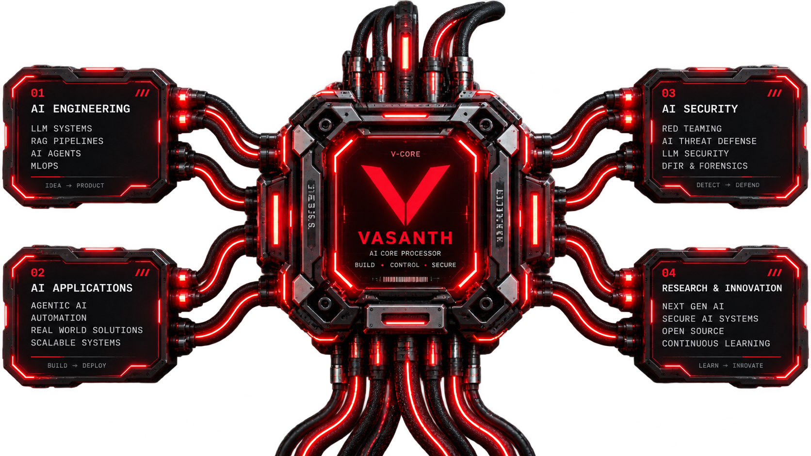

BUILD
AI applications, LLM-powered products and intelligent systems built around real use cases.
LLM · APIs · AI PRODUCTSI design and build AI applications, intelligent automation, agentic systems and security solutions — from idea to working product.

AI applications, LLM-powered products and intelligent systems built around real use cases.
LLM · APIs · AI PRODUCTSAgentic workflows, MCP, RAG and automation designed to turn AI into reliable working systems.
AGENTS · MCP · RAG · AUTOMATIONPractical security research and defensive tooling for LLM, RAG and autonomous agent ecosystems.
AI SECURITY · OWASP · MITRE ATLASWorking systems across AI engineering, automation and AI security.
Security operations automation platform connecting SIEM telemetry, AI-assisted triage, investigation, human approval and response workflows.
Agentic AI security gateway exploring runtime controls and defenses mapped to OWASP and MITRE ATLAS.
AI and retrieval security scanner focused on testing attack surfaces across retrieval-augmented systems.
AI-assisted digital forensics workflow for artifact analysis, timelines and investigation support.
Three focused roles. One stack built to engineer AI systems, develop autonomous agents and secure intelligent infrastructure.
Designing LLM systems, retrieval pipelines, agents and automation that turn models into working intelligence.
BUILD / ORCHESTRATE / AUTOMATEBuilding autonomous AI agents that reason, use tools, retrieve context and execute multi-step workflows with controlled human oversight.
AGENTS / TOOLS / WORKFLOWSTesting and defending LLM, RAG and agentic systems against prompt, retrieval, tool-use and autonomous workflow risks.
TEST / GUARD / SECUREMy current research direction explores how autonomous AI systems fail — from poisoned retrieval and indirect prompt injection to unsafe tool execution — and how practical guardrails can detect and contain those failures.
V@CORE:~$ research --status\n\n[+] RAG security ACTIVE\n[+] Agentic AI security ACTIVE\n[+] Retrieval poisoning TRACKING\n[+] Prompt injection TRACKING\n[+] AI red teaming BUILDING
Looking for an AI engineer or Agentic AI developer — or need an AI application, autonomous workflow, agentic system or AI security solution built? Let’s talk.